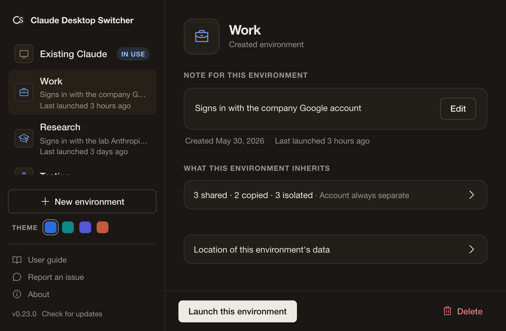
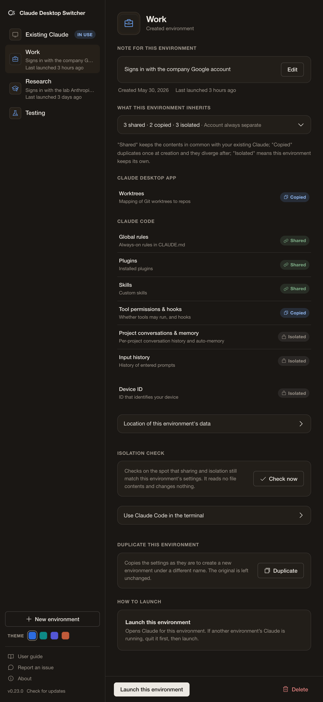
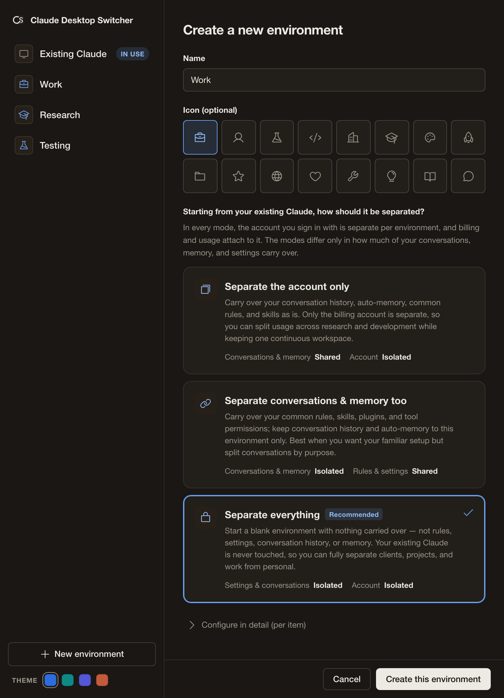
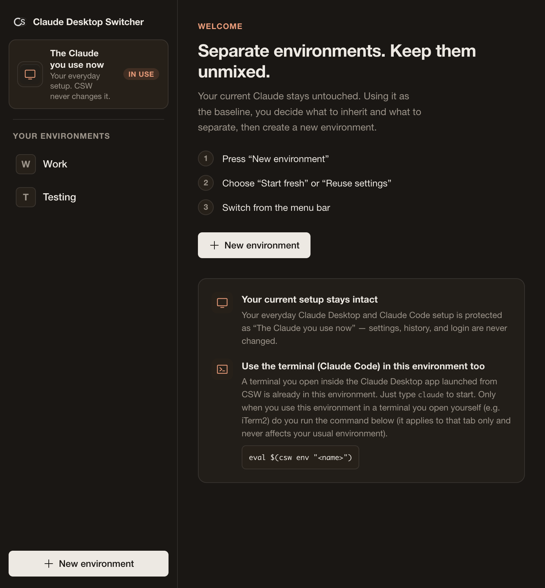

Separate your Claude Desktop App by use case.
Keep chat, Projects, Claude Cowork, Artifacts, and Claude Design apart by account and use case, with Claude Code linked when you want it. A macOS utility for the whole Claude Desktop App suite.

Separate the whole
Desktop App suite
Switching CLI profiles is already well handled by existing tools like direnv and claude-swap. CSW is for the rest of your Claude work: keep chat, Projects, Cowork, Artifacts, and Claude Design separated by account and use case, whether you live entirely in the desktop app, pair Cowork with Claude Code and Claude Design, or mainly use Cowork and chat. Claude Code links to the same environment when you want it: switch the GUI from the menu bar, and sync a separate terminal with one command.
Customizable Separation
Define exactly what to share and what to isolate. For example, you can completely separate your login sessions and past chat histories between 'Work' and 'Personal' environments, ensuring your data never crosses over.
Localized Application
Your Mac's global system settings remain untouched. The active environment applies strictly locally, only to the Claude Desktop App launched via this tool or your specific terminal tab. This prevents unexpected bleeding into your usual environment, with the actual isolation level depending on your sharing configuration.
See it in action.
The whole environment system lives in one settings window. Create isolated or shared environments, inspect exactly what each environment shares, and switch from the menu bar.



Designed for real workflows.
Adapt the level of isolation to match how you actually work on a single machine.
Separate the whole suite per project/client
When running multiple clients or projects in parallel, you want to avoid mixing chat history, Projects memory, Cowork working folders, and Artifacts.
Selecting the "Isolated" configuration allocates a separate data directory for each environment, each keeping its own login. Information from one client never structurally leaks across the desktop suite into another.
Work and personal on one Mac (no terminal)
You want to keep your business and personal accounts apart without touching the terminal.
Pick an environment from the menu bar to switch to that account's Claude Desktop App without signing in again. No terminal needed; it is complete in the GUI.
Share common rules across environments
You want separate accounts but want to reuse common rules and settings.
A "Shared" configuration synchronizes specific files (such as CLAUDE.md) across environments while keeping history and logins separate.
Link the CLI to your GUI separation
You want to use the environment you chose in the GUI from the CLI as well (for developers).
Sync the environment you chose in the GUI to Claude Code (CLI) in a separate terminal with a single command. This adds GUI-level consistency on top of what existing CLI-only switchers already solve. See Terminal Integration below for the exact command.
GUI Workflow.
Manage Desktop environments from the menu bar. Link CLI environments via terminal commands.
Install & Launch
Drag to Applications and run. A quiet menu bar icon appears.
Create Environments
Generate isolated "Work" or "Research" environments with single clicks.
Switch from the Menu Bar
Select an environment, and its Claude Desktop App launches against its own isolated directory. One environment runs at a time, so quit the running Claude before switching to another.
Terminal (Claude Code) Integration
The built-in terminal inside the app inherits its environment automatically. For a separate external terminal (like iTerm), one command switches it.
Unified Environment Management
GUI data and CLI configs are unified and managed under a single, cohesive environment.
Flexible Sharing
Choose between complete isolation (default) or syncing specific settings across environments.
Terminal Integration
The built-in terminal inherits its environment automatically. For an external terminal (iTerm2, etc.), one command switches it. Replace the last argument with the name of the environment you want.
eval $(csw env <env-name>)
FAQ
Share and isolate are always relative to "Existing Claude". You build a new environment by choosing what to inherit from it and what to keep separate.
Share / isolate: relative to what?
Always relative to "Existing Claude" (your existing setup). For each item, you choose whether to use the same thing as your existing Claude (share) or keep a new one just for this environment (isolate).
What is "Existing Claude"?
Your existing Claude Desktop and Claude Code setup. CSW only uses it as the reference point and never changes or deletes your settings, history, or login.
Do I need a new environment just to use the same account?
No. If you only want to keep using the same setup, just launch Claude as usual and "Existing Claude" is used directly. CSW helps when you want independent environments for other accounts or projects.
Will a new environment break my original Claude?
No. Each environment lives in its own dedicated directory, physically separate from the original. Deleting an environment never affects your original setup.
Do I have to sign in again on every switch?
No. Each environment keeps its login inside its own directory. Sign in once and it persists across switches (items set to isolate start empty in the new environment).
Does switching the desktop app also switch the terminal?
The terminal inside the app launched from CSW (built-in) is already in the same environment, so no command is needed. A terminal you open separately (external) stays in your usual environment, so run eval $(csw env <env-name>) (the name of the environment you want) to sync it (it applies to that tab only).
Engineering notes
A record of how CSW is built and how we keep its quality, from a design and verification standpoint.
Rust and Tauri, built around not breaking anything
At the core of CSW is a shared Rust library (crates/core) that handles environment isolation, path resolution, and data safety. The command line (csw) and the menu-bar GUI (crates/desktop) are both thin layers over this same core. Because not destroying your existing data is the top priority, deletion paths are guarded so they never target the real existing-data directory, and shared-config symlinks are moved to a backup before they are swapped. We chose Rust, where invariants can be checked at compile time, as the core that upholds this safety together with tests.
The GUI uses Tauri v2. It renders through the operating system's WebView (WebKit on macOS) and does not bundle a browser engine, so the universal DMG is around 7 MB. Code signing and notarization run through Tauri's standard distribution flow.
For native macOS UI, Apple's Swift and SwiftUI are the first choice. Because CSW's value centers on systems-level logic with a thin UI, we prioritized core correctness and automated verification by choosing Rust and Tauri. A different kind of app would call for a different choice.
Fit with autonomous AI development
In our development we use dynamic workflows that fan out multiple agents in parallel, dividing the work of research, implementation, and verification. For verification, separate agents adversarially review the generated code, and as the shared basis for those judgments we rely on signals a machine can decide unambiguously: the compiler's type checks, clippy's findings, and cargo test pass/fail.
Because Rust is a typed, compiled language, these pass/fail signals come back densely and early, which we find pairs well with feedback loops in which agents iterate on fixes autonomously. This is not a dismissal of other languages or approaches but a choice to anchor our process on machine-checkable signals. That said, passing compilation and tests confirms the mechanics work as written, not the correctness of intent, so we combine them with additional gates such as headless rendering checks and two-way consistency audits.
Design and docs governed by skills
We codify our design direction, copy standards, and the consistency of expression across the Claude Desktop app and Claude Code as versioned "skill" files inside the repository. Under .agents/ we keep instruction files such as design-taste-frontend, minimalist-ui, japanese-typography-qa (which handles Japanese line-breaking and type scale), and high-end-visual-design, all referencing a single canonical CLAUDE.md.
Design and copy changes are driven through these skills and verified mechanically by headless-browser rendering checks in CI. In addition, a /audit-consistency skill cross-checks the app GUI against the documentation and the landing page in both directions to surface any divergence in wording. These mechanisms fix design knowledge as text to preserve repeatability and consistency; they are tooling for consistency rather than an automatic guarantee of higher quality.